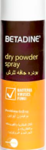

ادويتي
الرئيسية
خدمات الموقع
الادويه
الاسعافات الاوليه
التعليمات و التنبيهات
الامراض
البرد و الانفلونزا
الآم عظام ، مفاصل و عضلات
الآم الجهاز الهضمي
العنايه بالعيون
مسكن للالم
تواصل معنا
خلك safety مع ادويتي
الرئيسيه
الادويه
Betadine

الوصف
بيتادين رش مسحوق جاف يحتوي على العنصر النشط بوفيدون اليود و يعتبر من المطهرات
دواعي الاستعمال
الوقايه من العدوى في الجروح البسيطه | علاج الالتهابات الجلديه الفطريه و البكتيريه | الوقايه من العدوى في العمليات الجراحيه البسيطه
موانع الاستعمال
حساسية من اليود | الجراح العميقه | الاطفال دون سن الثانية عشرة من عمره
تحذير
للاستعمال الخارجي على الجلد فقط | تجنب استنشاق الرذاذ و اتصاله بالعينين